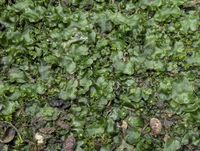

Monosoleniaceae
Monosolenium Liverwort
Monosoleniaceae is a monotypic family (containing only Monosolenium tenerum) in the order Marchantiales. Despite its phylogenetic placement among complex thalloid liverworts, it is characterized by a relatively simple-appearing, brittle thallus lacking obvious surface pores or air chambers. Native to East Asia, it is widely known through its use in freshwater aquariums.
Overview
The Monosoleniaceae family contains a single genus and species, Monosolenium tenerum. This liverwort forms medium to large, prostrate thalli that branch dichotomously and are notably brittle, easily fragmenting. Superficially, the dark green, somewhat translucent thallus appears simple, lacking the distinct surface patterns, pores, and air chambers found in many other Marchantiales like Marchantia or Conocephalum, resembling more closely families like Dumortieraceae or even some simple thalloid liverworts (Metzgeriales).
Native to East Asia (including China, Japan, Taiwan, and parts of India), Monosolenium tenerum typically grows on moist, shaded soil or rocks. However, it has gained global recognition through the aquarium trade, where it is cultivated as an aquatic plant (often incorrectly sold as Pellia endiviifolia). It thrives submerged, forming dense, brittle cushions.
Plants are monoicous, bearing both antheridia and archegonia on the same thallus. Unlike many related families, Monosoleniaceae lacks specialized stalked reproductive receptacles (archegoniophores and antheridiophores); the sex organs are borne directly on the dorsal surface, with archegonia protected by simple involucres.
Quick Facts
- Scientific Name: Monosoleniaceae
- Common Name: Monosolenium Liverwort
- Number of Genera: 1 (Monosolenium)
- Number of Species: 1 (M. tenerum)
- Distribution: Native to East Asia (China, Japan, Taiwan, India, etc.); widely cultivated for aquariums globally. Found naturally on moist soil/rocks in shade.
- Evolutionary Group: Bryophytes - Liverworts (Marchantiophyta) - Class Marchantiopsida - Order Marchantiales
Key Characteristics
Growth Form and Habit
Plants form medium to large, prostrate, dichotomously branching thalloid gametophytes, creating mats that are characteristically brittle and easily fragmented. The thallus is typically dark green and somewhat translucent.
Thallus Structure
Externally, the thallus appears relatively simple, lacking obvious air pores and the distinct surface patterning associated with well-developed air chambers seen in many Marchantiales. Internally, rudimentary air chambers may be present, but they are not evident from the surface. The thallus is several cells thick, particularly near the indistinct midrib. The ventral surface bears numerous rhizoids and small, scattered, often inconspicuous ventral scales. The thallus lacks a strong aromatic scent. Asexual reproduction via specialized gemmae is absent, but fragmentation is very common due to the brittle nature.
Reproductive Structures
Plants are typically monoicous. A key feature is the absence of specialized stalked receptacles (archegoniophores and antheridiophores). Antheridia are scattered or grouped in small clusters, sunken in pits on the dorsal surface, often near the midline. Archegonia are also borne dorsally, singly or in small groups, and become surrounded after fertilization by a simple, erect, tubular or flap-like involucre (pseudoperianth) that develops from the thallus surface.
Sporophyte and Spores
The sporophyte develops within the dorsal involucre. It consists of a foot, a short seta, and a dark, spherical capsule. The capsule wall is unistratose and dehisces irregularly or by 4 valves. Functional elaters with spiral thickenings are present among the spores. Spores are released singly.
Chemical Characteristics
The specific chemical profile is not a defining feature. The brittle texture is a notable physical characteristic. Adaptability to submerged aquatic conditions (in cultivation) is significant.
Field Identification
Identifying Monosolenium tenerum involves recognizing its thallus texture, lack of surface features, and simple reproductive structures:
Primary Identification Features
- Brittle, somewhat translucent thallus: Easily fragments when handled.
- Apparent lack of surface pores/pattern: Dorsal surface looks relatively uniform and smooth compared to Marchantia or Conocephalum.
- Absence of stalked receptacles: Sex organs and sporophytes are borne directly on the dorsal thallus, protected only by simple involucres.
- Absence of gemma cups.
- Habitat: Moist soil/rocks in East Asia, or commonly found as an aquarium plant.
Secondary Identification Features
- Monoicous condition.
- Scattered, small ventral scales.
- Dichotomous branching.
Seasonal Identification Tips
- Gametophyte: Perennial, visible year-round in suitable habitats (including aquariums).
- Reproductive Structures: Develop seasonally but are less conspicuous than the stalked receptacles of related families. Fragmentation is a constant mode of propagation.
Common Confusion Points
- Pellia species (Pelliaceae, order Pelliales): Also thalloid and found in wet places, but belongs to a different order (simple thalloids). Pellia has different involucres (often flap-like), different sporophyte structure (long seta elongating before capsule dehiscence), and generally a less brittle texture.
- Dumortiera hirsuta (Dumortieraceae): Also lacks obvious pores, but is much larger, has a velvety texture, hirsute margins, and distinct (though simple) stalked archegoniophores and sessile antheridial pads.
- Riccardia / Aneura (Aneuraceae, order Metzgeriales): Simple thalloids, often pinnately branched or narrower, different reproductive structures borne ventrally or laterally.
- Aquarium Misidentifications: Often sold as "Pellia" or confused with "Subwassertang" (likely a fern gametophyte, Lomariopsis lineata). Monosolenium is distinct from these by its structure and brittleness.
Field Guide Quick Reference
Look For:
- Brittle, dark green thallus
- Smooth dorsal surface (no obvious pores/pattern)
- No stalked receptacles
- Reproductive structures dorsal, with simple involucres
- No gemma cups
- Habitat: Wet soil/rocks (Asia) or aquarium
Key Distinctions:
- Brittleness + lack of pores + lack of stalked receptacles is key.
- Distinguished from Pellia by brittleness, reproductive details, phylogenetic placement.
- Distinguished from Dumortiera by smaller size, lack of velvety/hirsute features, lack of receptacles.
Notable Examples
The family Monosoleniaceae contains only one species:

Monosolenium tenerum
Monosolenium Liverwort
The sole representative of its family. Native to East Asia, this liverwort is characterized by its brittle, relatively large thallus that appears simple, lacking obvious surface pores or air chambers. It lacks specialized stalked reproductive receptacles, bearing sex organs directly on the dorsal thallus within simple involucres. It is widely cultivated and popular in freshwater aquariums, often under incorrect names like "Pellia".
Phylogeny and Classification
Despite its relatively simple external appearance, molecular phylogenetic studies firmly place Monosoleniaceae within the order Marchantiales, related to families characterized by complex thallus structures. This indicates that the lack of obvious air pores and chambers in Monosolenium is likely a result of secondary reduction or modification, similar to the situation in Dumortieraceae, perhaps related to its moist habitat preferences.
Its position within Marchantiales highlights the morphological diversity within the order, including lineages that have simplified certain complex thalloid features. The complete lack of specialized, stalked archegoniophores and antheridiophores also distinguishes it from many other families in the order, suggesting a different evolutionary trajectory for the presentation of reproductive structures.
Position in Plant Phylogeny
- Kingdom: Plantae
- Clade: Embryophytes (Land plants)
- Division: Marchantiophyta (Liverworts)
- Class: Marchantiopsida
- Order: Marchantiales
- Family: Monosoleniaceae
Evolutionary Significance
Monosoleniaceae is evolutionarily significant due to:
- Secondary Simplification: Provides another example within Marchantiales of the reduction of complex thalloid features (pores/chambers).
- Loss/Reduction of Receptacles: Demonstrates that the evolution of stalked reproductive structures is not universal within the order.
- Phylogenetic Placement vs. Morphology: Highlights how external simplicity can mask a phylogenetic position among complex relatives.
- Adaptability: Its successful cultivation in aquariums shows a degree of ecological flexibility, at least under artificial conditions.